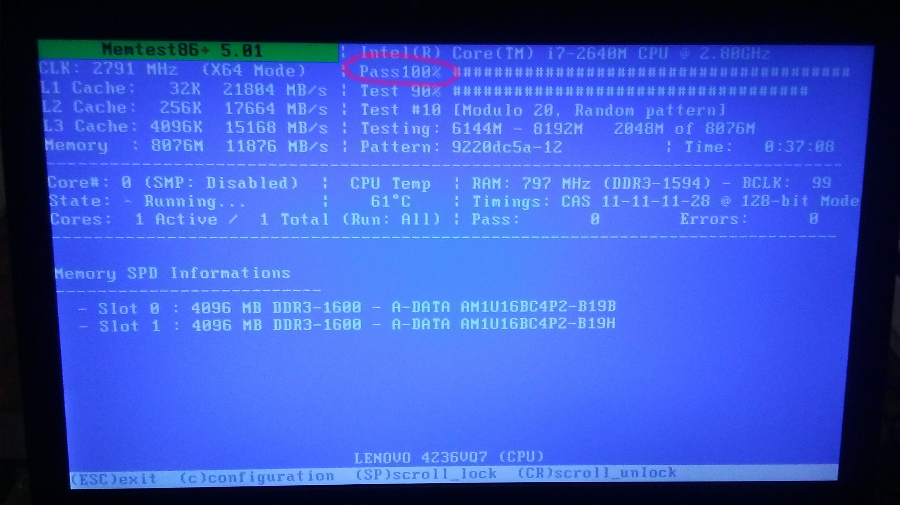
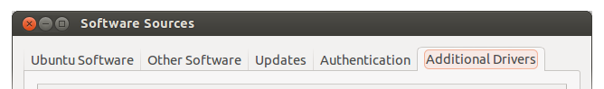

run Windows diagnostics provided by the manufacturer
Before wiping clean the Windows OS / malware with which your computer can pre-installed be sure to run any diagnostic tests supplied by the manufacturer in case they are only provided for Windows. In my particular case there were some battery diagnostics which I neglected to run before formatting the drive and so I relied on Linux battery diagnostics.
research how you enter the BIOS
In the afore-mentioned machine F1 takes you to the BIOS and F12 directly to the boot order menu (which you should use to boot from the USB flash drive). I had to ask to find out.create an Ubuntu 16.04 live USB flash drive using UNetbootin
USB Creator is another option but see in this note why you're better off using UNetbootin instead.If, after you've created a couple of live Ubuntu USB flash drives, you are unsure which version is each one do a:
$cat /media/usb-disk/.disk/info… to find out (source).
perform a memory test (before wiping clean the disk in case you have to return it)
Assuming you created your Live Ubuntu USB flash drive using UNetbootin — and that you've read the caveat on this note — you should be able to run the memory test diagnostic. If all goes well you should see a screen similar to this:
{kind=link}
… once the "Pass" variable reaches past 100% it will go back to 0% and repeat the test (at which point you can press ESC to exit the test).
Here's a relevant Ask Ubuntu answer (to which I have commented).
Here's another Ask Ubuntu thread that also mentions
(in this answer — to which I have also commented) the
memtester program (sudo apt-get install memtester). I used that as well but it's not practical
(or even outright impossible) to scan using memtester the entire memory as the system becomes very
unresponsive (with all memory being locked by memtester to perform the test). Whereas the memory test of UNetbootin
is run before loading the operating system and any user programs so there the responsivity point is moot. In general, I
think it makes sense to use memtester only when trying to check a particular area of memory (though I haven't tried that).
install Ubuntu 16.04 from the live USB flash drive
I wish I could say that that was entirely incident-free but I think that at some point I was unable to boot from the USB flash drive (consistently thankfully, it was not random) and I had to bookmark this solution but I am not sure at the moment when that was while trying to boot 16.04 or some older LTS versions (14.04, 12.04) which I also tried.examine dmesg and syslogs for hardware / BIOS issues
Once you login for the first time you should check the output of the boot process
(which is usually available for you to inspect in /var/logs/dmesg or just by
using the dmesg command).
You should also examine the various system logs in /var/log
(the most important of which is kern.log and syslog)
for anything that might look weird and investigate further. Note in this connection
that in my Ubuntu 16.04 system syslog appears to be a clean superset of kern.log
(see my comment on this answer).
E.g. I would do:
$ cat /var/log/kern.log | grep -i -E "error|crit|emerg|alarm" $ cat /var/log/syslog | grep -i -E "error|crit|emerg|alarm"… or use
-E "error|crit|emerg|alarm|warning" if you want to investigate warnings too.
The various codes are apparently related to the arguments used in syslog API:
$ man syslog | grep -i -E "(conditio|unusable)"This being said, the output is hard to decipher and it's not clear how many of the messages displayed really require action on your behalf. Here's the most relevant Ask Ubuntu answer on this topic.
Visually inspecting the boot process output (which is available in the kernel ring buffer for you to inspect
with dmesg provided clues which were more actionable and worthwhile to follow in my experience.
Using this method I handled the following cases:
- During boot I was getting the following message:
A TPM error (6) occurred attempting to read a pcr value
Activating the Security Chip in BIOS (accessible with F1) removed this message. Relevant posts: here and here. - Enable virtualization from the BIOS. During boot I was getting the following message:
kvm:disabled by bios
… this is in fact a warning that even though the processor has KVM support (not to be confused by this use of the same acronym), this ability is turned-off by the BIOS. To fix this problem I had to enable some IBM virtualization technology flag in the BIOS. Relevant links on the subject are here, here and here. Here are some screenshots from the last link (not from my own system but very similar according to my recollections): screen 1, screen 2 and screen 3, Apparently from the latter answer it can be inferred that the following incantation should server to show whether a CPU has kernel virtualization capabilities:grep -E "(vmx|svm)" --color=always /proc/cpuinfo
… and indeed the above produces some output on my system.
{kind=link}
{kind=link}
{kind=link}
check disk
Install smartctl with sudo apt-get install smartmontools and do a:
$ sudo smartctl -a /dev/sda1 | grep -i old_age
A more visually reassuring output can be produced with the disks Unity program (use as gnome-disks from a terimal):

check for burnt / stuck pixels
There's plenty of videos on youtube for that.research for other useful hardware diagnostics to run (e.g. provided by the manufacturer)
I asked a question about that but didn't do anything in addition to the above checks.install additional drivers (from Ubuntu Software Center) and upgrade kernel
I noticed some very mild flickering on my screen while watching youtube videos and after establishing it was not Chrome-related (as Firefox exhibited the same behaviour), I decided to install additional drivers and upgrade the kernel. In retrospect I don't believe these two measures alleviated the flickering (at least not markedly). At any rate it is borderline imperceptible so I didn't pursue this issue much further.
I install additional drivers for my Intel video graphics card (I think) using the Unity interface
and the options under system / software sources / additional drivers:

{kind=link}
Ubuntu 16.04 uses the 4.4 kernel. I upgraded to 4.6:
$ uname -r 4.6.0-040600-generic… by following the instructions given here as follows (mutatis mutandis):
cd /tmp/ wget http://kernel.ubuntu.com/~kernel-ppa/mainline/v4.6-yakkety/linux-headers-4.6.0-040600_4.6.0-040600.201605151930_all.deb wget http://kernel.ubuntu.com/~kernel-ppa/mainline/v4.6-yakkety/linux-headers-4.6.0-040600-generic_4.6.0-040600.201605151930_amd64.deb wget http://kernel.ubuntu.com/~kernel-ppa/mainline/v4.6-yakkety/linux-image-4.6.0-040600-generic_4.6.0-040600.201605151930_amd64.deb sudo dpkg -i *.debBasically, download the packages you need from here and install them using
sudo dpkg -i *.deb.
check both VGA and DisplayPort video outputs
I connected an external monitor and verified that the system works as expected with either of the two monitors or both of them turned on. I used xrandr to selectively direct the output.check battery
NB: be sure to execute this step first
Apparently a number of Lenovo laptops (thankfully not the one I purchased) are equiped with faulty Panasonic batteries (local printed copy here).
So, you might want to check that as well. The following incantations provide helpful information:
$ upower -e /org/freedesktop/UPower/devices/line_power_AC /org/freedesktop/UPower/devices/battery_BAT0 /org/freedesktop/UPower/devices/DisplayDevice $ upower -i /org/freedesktop/UPower/devices/battery_BAT0
Also, the fwts program actually tests the battery:
sudo apt-get install fwts sudo fwts battery… in my case the fwts results weren't stellar but I decided to keep the battery (life's too short, one can't afford to get lost in rabbit holes all the time). As a matter of fact I have actually already encountered one case where the battery wasn't charging even though the laptop was plugged-in (this was solved by a full shutdown of the machine and a restart so I let it go at that).
install git and setup my environment
This was uneventfull.install Node and npm
I installed Node 6 (Node 7 is still in active development) and npm by following the offical instructions and simply doing:
curl -sL https://deb.nodesource.com/setup_6.x | sudo -E bash - sudo apt-get install -y nodejs… which resulted in the following situation in my system:
$ node --version v6.9.1 $ npm --version 3.10.8
Apparently there was a problem with these instructions in the past but now they are working fine — see my comment on this answer.
install Java SDK
To install the Java SDK I followed these instructions which instructed me to add this PPA. Basically, the following is all I did:sudo add-apt-repository ppa:webupd8team/java sudo apt update; sudo apt install oracle-java8-installerAfter the above stanza I had:
$ java -version java version "1.8.0_111" Java(TM) SE Runtime Environment (build 1.8.0_111-b14) Java HotSpot(TM) 64-Bit Server VM (build 25.111-b14, mixed mode) mperdikeas@mp-t420:~/js-react-minesweeper# $ javac -version javac 1.8.0_111
install PostgreSQL
I installed PostgreSQL out of the official Ubuntu repo simply using:sudo apt-get update sudo apt-get install postgresql postgresql-contribThe version installed was 9.5.5 as evidenced by:
sudo -u postgres psql postgres -c 'SELECT version()' | grep PostgreSQLYou may run the above incantation fresh out of the install without changing anything provided ofcourse you have sudo privilleges.
install Ant
Ant was installed uneventfully from the sources:sudo apt-get update sudo apt-get install ant
built and install Ivy from sources
I decided to built Ivy from the sources so that I might be in position to insert some logging code in case I encounter any difficult to resolve problem.
I installed IVY by following the instructions (to build from sources) on this page and doing:
git clone https://git-wip-us.apache.org/repos/asf/ant-ivy.git git checkout tags/2.4.0 ant jar cp build/artifact/org.apache.ivy_2.4.0.final_20161112135640.jar ~/.ant/lib/… otherwise if you fail to check out the stable 2.4.0 tag, then the master branch version 2.5.0.alpha will be built.
install TrueCrypt or other privacy software
To install TrueCrypt on Ubuntu 16.04 you also need:sudo apt-get install dmsetupdmsetup is now no standard application, so you must install it explicitly (source).